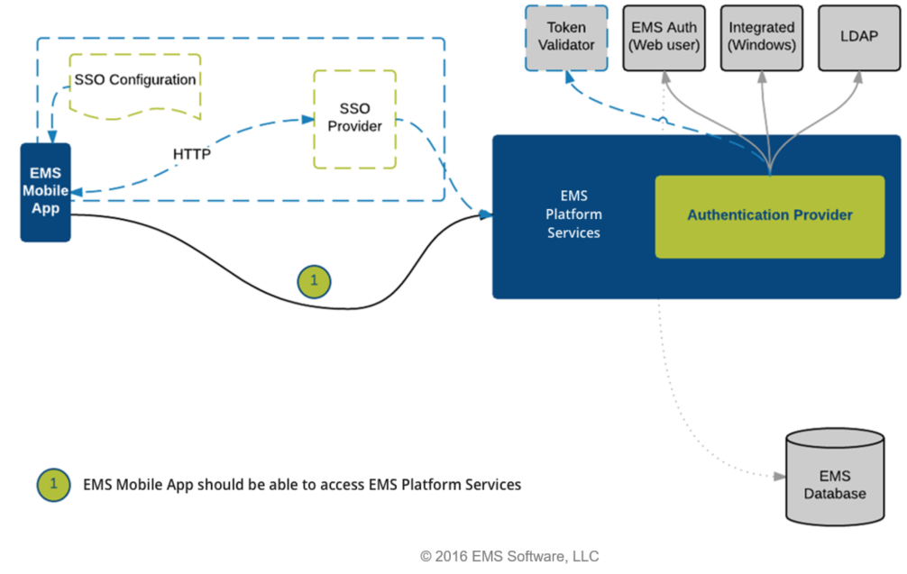

Architecture
Data Flow
The diagram below shows how EMS Everyday Applications interact with , your web and database servers, and Microsoft® Exchange.

Authentication
The diagram below shows the authentication process for .

The consists of an iOS or Android native app deployed on users' smartphones, the API which sits on a web server, and the EMS database. The App connects to the API, which authenticates users and talks to the EMS database.
See Also:
-
-
How [%=General.Mobile App%] Data Is Stored on Devices